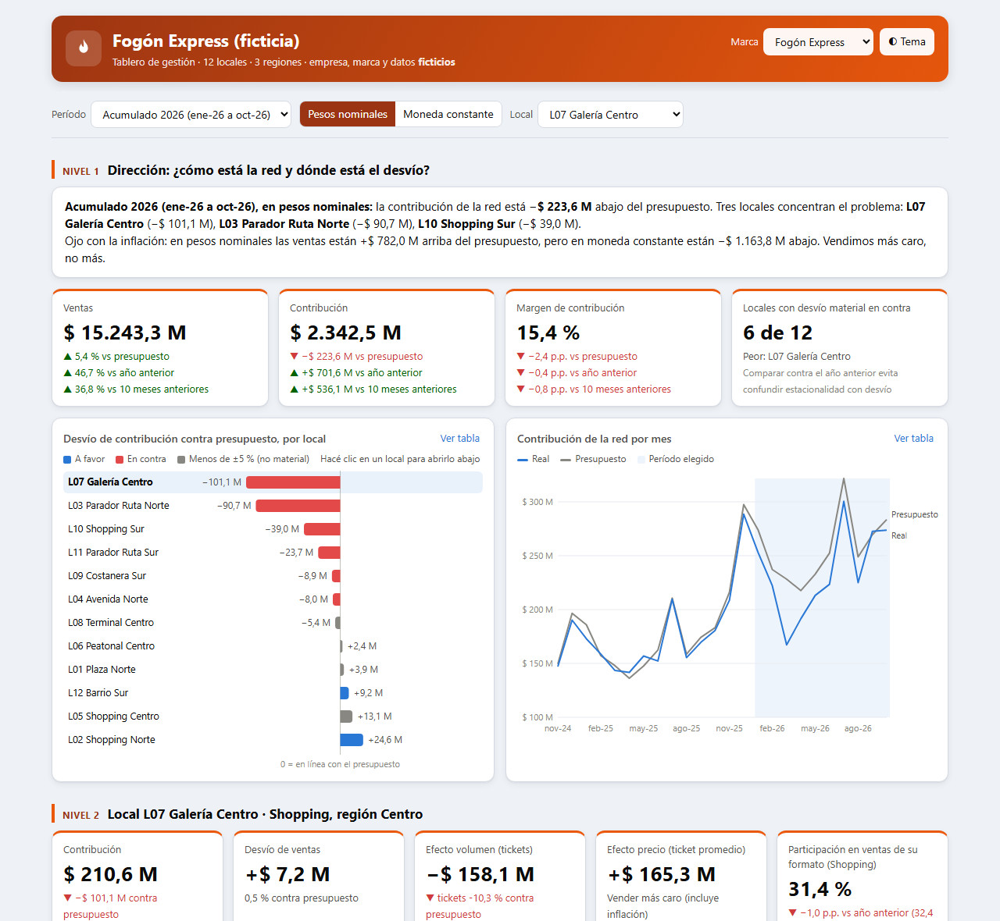
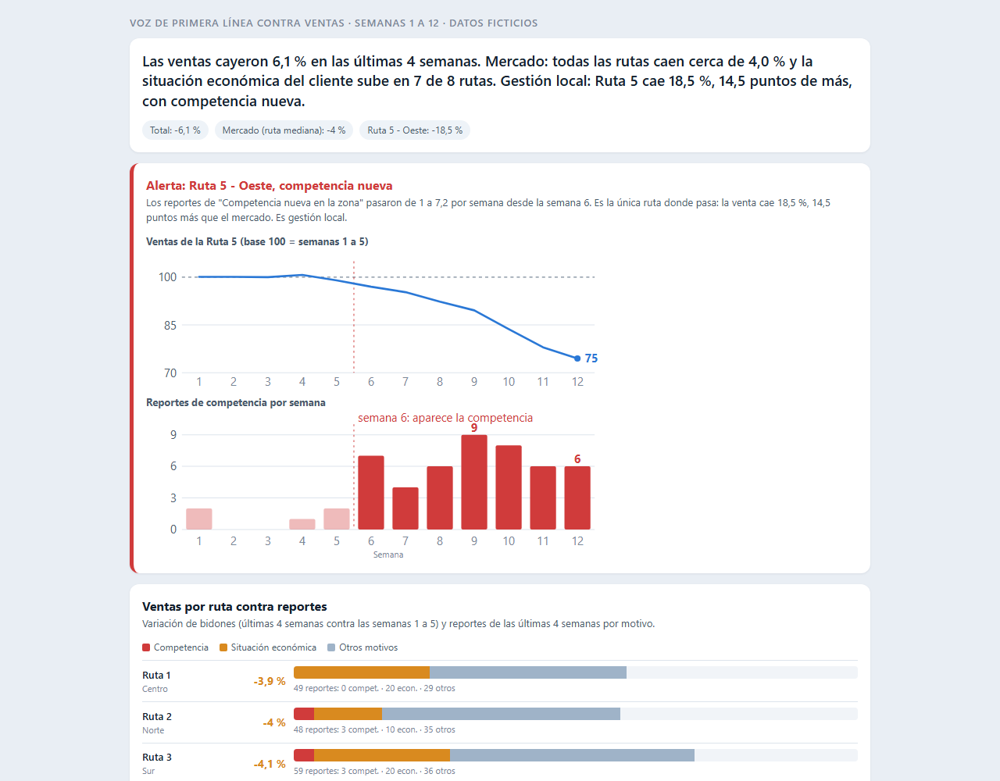
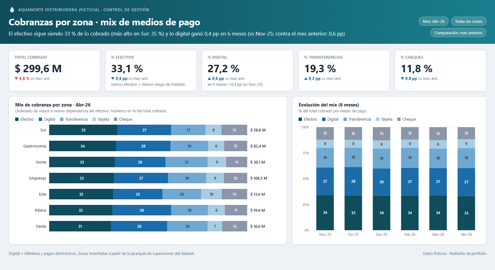

Caso 05 · Cadena de 12 locales
Del desvío de la red a la causa en tres clics
Presupuesto, año anterior y mes anterior; moneda constante; comparación contra pares; demo con login por rol.
Matías Garnica · Contador (UBA) y analista de control de gestión. De dónde sale cada dato, cómo se calcula y cómo se le cuenta a cada gerente para que decida. Todo con datos ficticios, reproducibles con los scripts del repositorio.

Presupuesto, año anterior y mes anterior; moneda constante; comparación contra pares; demo con login por rol.

Formulario de un minuto para repartidores cruzado con la venta por ruta, con resumen y alerta semanal.
